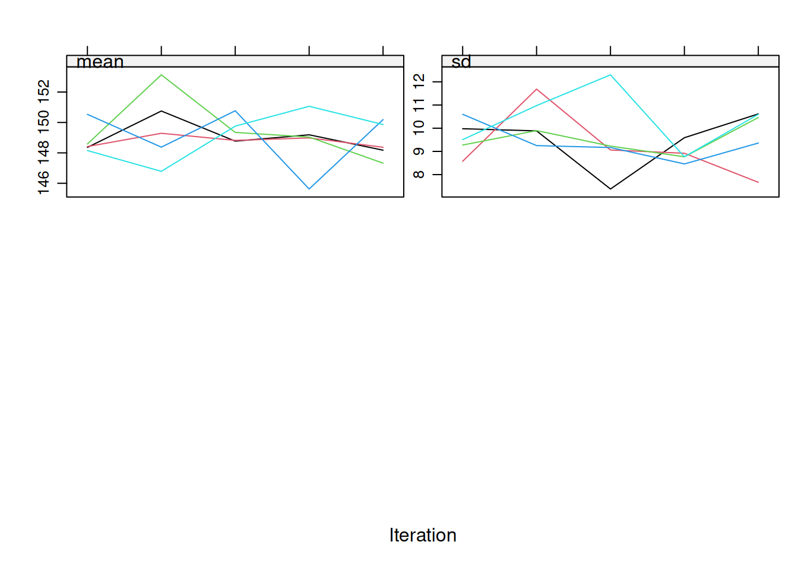

Multiple Imputation
1 Preamble
1.1 Install Libraries
#install.packages("remotes")
#remotes::install_github("DevPsyLab/petersenlab")1.2 Load Libraries
library("tidyverse")
library("psych")
library("mice")
library("micemd")
library("miceadds")
library("mitml")
library("Amelia")
library("jomo")
library("parallely")Error in library("parallely"): there is no package called 'parallely'library("future")
library("furrr")
library("nlme")
library("lme4")
library("broom.mixed")
library("MplusAutomation")1.3 Data
data(Oxboys, package = "nlme")
Oxboys_addNA <- data.frame(Oxboys)
Oxboys_addNA <- Oxboys_addNA %>%
rename(id = Subject)
Oxboys_addNA$id <- as.integer(Oxboys_addNA$id)
Oxboys_addNA$Occasion <- as.integer(Oxboys_addNA$Occasion)
set.seed(52242)
Oxboys_addNA[sample(1:nrow(Oxboys_addNA), 25), "height"] <- NA
dataToImpute <- Oxboys_addNA2 Types of Missingness
- Missing Completely at Random (MCAR)
- the probability of being missing is the same for all cases
- missingness is not related to variables in the model
- (Conditionally) Missing at Random (MAR)
- missingness is related to variables in the model, but once we condition on the variables in the model, the missingness is haphazard
- the unobserved values do not play a role
- Missing Not at Random (MNAR)
- missingness is related to variables that are not in the model (i.e., for reasons that are unknown)
- unobserved variables carry information about whether a case will have missing data
3 Approaches to Handle Missing Data
3.1 For MCAR/MAR Missingness
- Full Information Maximum Likelihood (FIML)
- Multiple Imputation
3.2 For MNAR Missingness
https://stefvanbuuren.name/fimd/sec-nonignorable.html (archived at https://perma.cc/N7WW-HDZF)
https://cran.r-project.org/web/packages/missingHE/vignettes/Fitting_MNAR_models_in_missingHE.html (archived at https://perma.cc/9X25-5D8G)
- find more data about the causes for the missingness
- sensitivity analyses (what-if analyses) to see how sensitive the results are under various scenarios
- selection models
- simultaneously estimate the focal model and a missingness model, where the missingness model has the missing data indicator as a dependent variable, as predicted by the original dependent variable, the original predictors, and any additional covariates etc.
- if the missingness model is approximately correct, the focal model adjusts in way that removes nonresponse bias
- similar to a mediation process
- X → Y
- Y → missingness
- X → missingness
- https://quantitudepod.org/s4e08-craig-enders/ (archived at https://perma.cc/FY9L-L3F7)
- pattern-mixture models
- missing data indicator is a predictor variable
- similar to a moderation process; subgroups of cases have different parameter estimates
4 Approaches to Multiple Imputation
- multiple imputation by joint modeling
- assumes that the variables in follow a joint distribution, e.g.:
- multivariate normal (i.e., multivariate normal imputation)
Rpackages:jomopanAmeliaMplus
- assumes that the variables in follow a joint distribution, e.g.:
- multiple imputation by chained equations
- aka:
- fully conditional specification multiple imputation
- sequential regression multiple imputation
Rpackages:mice- predictive mean matching (
?mice::mice.impute.pmm) can be useful to obtain bounded imputations for non-normally distributed variables
- predictive mean matching (
- aka:
5 Describe Missing Data
describe(dataToImpute)md.pattern(dataToImpute, rotate.names = TRUE) id age Occasion height
209 1 1 1 1 0
25 1 1 1 0 1
0 0 0 25 256 Pre-Imputation Setup
6.1 Specify Variables to Impute
varsToImpute <- c("height")
Y <- varsToImpute6.2 Specify Number of Imputations
numImputations <- 5 # generally use 100 imputations; this example uses 5 for speed6.3 Detect Cores
numCores <- parallelly::availableCores() - 17 Multilevel Multiple Imputation
7.1 Three-Level and Cross-Classified Data
https://simongrund1.github.io/posts/multiple-imputation-for-three-level-and-cross-classified-data/ (archived at https://perma.cc/N4PP-A3V6)
7.2 Methods
7.2.1
mice
7.2.1.1 Types
7.2.1.1.1 Continuous Outcomes
https://stefvanbuuren.name/fimd/sec-multioutcome.html#methods (archived at https://perma.cc/8CDA-TS3K)
?mice::mice.impute.2l.norm
?mice::mice.impute.2l.pan
?mice::mice.impute.2l.lmer
?miceadds::mice.impute.2l.pmm
?miceadds::mice.impute.2l.contextual.pmm
?miceadds::mice.impute.2l.continuous
?micemd::mice.impute.2l.2stage.norm
?micemd::mice.impute.2l.2stage.pmm
?micemd::mice.impute.2l.glm.norm
?micemd::mice.impute.2l.jomo7.2.1.1.2 Binary Outcomes
https://stefvanbuuren.name/fimd/sec-catoutcome.html#methods-1 (archived at https://perma.cc/5QHF-YRP6)
?mice::mice.impute.2l.bin
?miceadds::mice.impute.2l.binary
?miceadds::mice.impute.2l.pmm
?miceadds::mice.impute.2l.contextual.pmm
?micemd::mice.impute.2l.2stage.bin
?micemd::mice.impute.2l.glm.bin7.2.1.1.3 Ordinal Outcomes
https://stefvanbuuren.name/fimd/sec-multioutcome.html#methods (archived at https://perma.cc/8CDA-TS3K)
?miceadds::mice.impute.2l.pmm
?miceadds::mice.impute.2l.contextual.pmm
?micemd::mice.impute.2l.2stage.pmm7.2.1.1.4 Count Outcomes
https://stefvanbuuren.name/fimd/sec-catoutcome.html#methods-1 (archived at https://perma.cc/5QHF-YRP6)
?micemd::mice.impute.2l.2stage.pois
?micemd::mice.impute.2l.glm.pois
?countimp::mice.impute.2l.poisson
?countimp::mice.impute.2l.nb2
?countimp::mice.impute.2l.zihnb7.2.1.2 Specifying the Imputation Method
meth <- make.method(dataToImpute)
meth[1:length(meth)] <- ""
meth[Y] <- "2l.pmm" # specify the imputation method here; this can differ by outcome variable7.2.1.3 Specifying the Predictor Matrix
A predictor matrix is a matrix of values, where:
- columns with non-zero values are predictors of the variable specified in the given row
- the diagonal of the predictor matrix should be zero because a variable cannot predict itself
The values are:
- NOT a predictor of the outcome:
0 - cluster variable:
-2 - fixed effect of predictor:
1 - fixed effect and random effect of predictor:
2 - include cluster mean of predictor in addition to fixed effect of
predictor:
3 - include cluster mean of predictor in addition to fixed effect and
random effect of predictor:
4
pred <- make.predictorMatrix(dataToImpute)
pred[1:nrow(pred), 1:ncol(pred)] <- 0
pred[Y, "id"] <- (-2) # cluster variable
pred[Y, "Occasion"] <- 1 # fixed effect predictor
pred[Y, "age"] <- 2 # random effect predictor
pred[Y, Y] <- 1 # fixed effect predictor
diag(pred) <- 0
pred id age height Occasion
id 0 0 0 0
age 0 0 0 0
height -2 2 0 1
Occasion 0 0 0 07.2.1.4 Syntax
mi_mice <- mice(
as.data.frame(dataToImpute),
method = meth,
predictorMatrix = pred,
m = numImputations,
maxit = 5, # generally use 100 maximum iterations; this example uses 5 for speed
seed = 52242)
iter imp variable
1 1 height
1 2 height
1 3 height
1 4 height
1 5 height
2 1 height
2 2 height
2 3 height
2 4 height
2 5 height
3 1 height
3 2 height
3 3 height
3 4 height
3 5 height
4 1 height
4 2 height
4 3 height
4 4 height
4 5 height
5 1 height
5 2 height
5 3 height
5 4 height
5 5 height7.2.2
jomo
level1Vars <- c("height")
level2Vars <- c("v3","v4")
clusterVars <- c("id")
fullyObservedCovariates <- c("age","Occasion")
set.seed(52242)
mi_jomo <- jomo(
Y = data.frame(dataToImpute[, level1Vars]),
#Y2 = data.frame(dataToImpute[, level2Vars]),
X = data.frame(dataToImpute[, fullyObservedCovariates]),
clus = data.frame(dataToImpute[, clusterVars]),
nimp = numImputations,
meth = "random"
)7.2.3
Amelia
!in the console output indicates that the current estimated complete data covariance matrix is not invertible*in the console output indicates that the likelihood has not monotonically increased in that step
boundVars <- c("height")
boundCols <- which(names(dataToImpute) %in% boundVars)
boundLower <- 100
boundUpper <- 200
varBounds <- cbind(boundCols, boundLower, boundUpper)
set.seed(52242)
mi_amelia <- amelia(
dataToImpute,
m = numImputations,
ts = "age",
cs = "id",
polytime = 1,
intercs = TRUE,
#ords = ordinalVars,
#bounds = varBounds,
parallel = "snow",
#ncpus = numCores,
empri = .01*nrow(dataToImpute)) # ridge prior for numerical stability-- Imputation 1 --
1 2 3 4 5 6 7 8 9 10 11 12 13 14 15 16 17 18 19 20
21
-- Imputation 2 --
1 2 3 4 5 6 7 8 9 10 11 12 13 14 15 16 17 18
-- Imputation 3 --
1 2 3 4 5 6 7 8
-- Imputation 4 --
1 2 3 4 5 6 7 8 9 10 11 12 13 14 15 16 17 18 19 20
21 22 23 24 25 26 27 28 29 30 31 32 33 34 35 36 37 38 39 40
41 42 43 44 45 46 47 48 49 50 51 52 53 54 55 56 57 58 59 60
61 62 63 64 65 66 67 68 69 70 71 72 73 74 75 76 77 78 79 80
81 82 83 84 85 86 87 88 89 90 91 92 93 94 95 96 97 98 99 100
101 102 103 104 105 106 107 108 109 110 111 112 113 114 115 116 117 118 119 120
121 122 123
-- Imputation 5 --
1 2 3 4 5 6 7 8 9 10 11 127.2.4
Mplus
7.2.4.1 Save
Mplus Data File
Save R object as Mplus data file:
prepareMplusData(dataToImpute, file.path("dataToImpute.dat"))TITLE: Your title goes here
DATA: FILE = "dataToImpute.dat";
VARIABLE:
NAMES = id age height Occasion;
MISSING=.;7.2.4.2
Mplus Syntax for Multilevel Imputation
Mplus syntax for multilevel imputation:
!!!!!!!!!!!!!!!!!!!!!!!!!!!!!!!!!!!!!!!!!!!!!!!!!!!!!!!!!!!!!!!!!!!!!!!!!!!!!!!!!!!!!!!!
!!!!! MPLUS SYNTAX LINES CANNOT EXCEED 90 CHARACTERS;
!!!!! VARIABLE NAMES AND PARAMETER LABELS CANNOT EXCEED 8 CHARACTERS EACH;
!!!!!!!!!!!!!!!!!!!!!!!!!!!!!!!!!!!!!!!!!!!!!!!!!!!!!!!!!!!!!!!!!!!!!!!!!!!!!!!!!!!!!!!!
TITLE: Model Title
DATA: FILE = "dataToImpute.dat";
VARIABLE:
NAMES = id age height Occasion;
MISSING = .;
USEVARIABLES ARE age height Occasion;
!CATEGORICAL ARE INSERT_NAMES_OF_CATEGORICAL_VARIABLES_HERE;
CLUSTER = id;
ANALYSIS:
TYPE = twolevel basic;
bseed = 52242;
PROCESSORS = 2;
DATA IMPUTATION:
IMPUTE = age(0-100) height Occasion; !put ' (c)' after categorical vars
NDATASETS = 100;
SAVE = imp*.datPutting a range of values after a variable (e.g., 0-100)
sets the lower and upper bounds of the imputed values. This would save a
implist.dat file that can be used to run the model on the
multiply imputed data, as shown here.
8 Parallel Processing
https://www.gerkovink.com/miceVignettes/futuremice/Vignette_futuremice.html (archived at https://perma.cc/4SNE-RCSR)
mi_parallel_mice <- futuremice(
dataToImpute,
method = meth,
predictorMatrix = pred,
m = numImputations,
maxit = 5, # generally use 100 maximum iterations; this example uses 5 for speed
parallelseed = 52242,
n.core = numCores,
packages = "miceadds")9 Imputation Diagnostics
9.1 Logged Events
mi_mice$loggedEventsNULL9.2 Trace Plots
On convergence, the streams of the trace plots should intermingle and be free of any trend (at the later iterations). Convergence is diagnosed when the variance between different sequences is no larger than the variance within each individual sequence.
plot(mi_mice, c("height"))
9.3 Density Plots
densityplot(mi_mice)
densityplot(mi_mice, ~ height)
9.4 Strip Plots
stripplot(mi_mice)stripplot(mi_mice, height ~ .imp)10 Post-Processing
10.1 Modify/Create New Variables
10.1.1
mice
mi_mice_long <- complete(
mi_mice,
action = "long",
include = TRUE)
mi_mice_long$newVar <- mi_mice_long$age * mi_mice_long$height10.1.2
jomo
mi_jomo <- mi_jomo %>%
rename(height = dataToImpute...level1Vars.)
mi_jomo$newVar <- mi_jomo$age * mi_jomo$height10.1.3
Amelia
for(i in 1:length(mi_amelia$imputations)){
mi_amelia$imputations[[i]]$newVar <- mi_amelia$imputations[[i]]$age * mi_amelia$imputations[[i]]$height
}10.2 Convert to
mids object
10.2.1
mice
mi_mice_mids <- as.mids(mi_mice_long)10.2.2
jomo
mi_jomo_mids <- miceadds::jomo2mids(mi_jomo)10.2.3
Amelia
mi_amelia_mids <- miceadds::datlist2mids(mi_amelia$imputations)10.3 Export for
Mplus
mids2mplus(mi_mice_mids, path = file.path("InsertFilePathHere", fsep = ""))
mids2mplus(mi_jomo_mids, path = file.path("InsertFilePathHere", fsep = ""))
mids2mplus(mi_amelia_mids, path = file.path("InsertFilePathHere", fsep = ""))11 Fit Model to Multiply Imputed Data
11.1 Multiple Regression
fit_lm <- with(
data = mi_mice,
expr = lm(height ~ age + Occasion))11.1.1 Pool Results Across Models
fit_lm_pooled <- mice::pool(fit_lm)
fit_lm_pooledWarning in `[<-.data.frame`(`*tmp*`, is_list, value = list(`3` = "<df[,11] [0 ×
11]>", : replacement element 1 has 1 row to replace 0 rowsWarning in `[<-.data.frame`(`*tmp*`, is_list, value = list(`3` = "<df[,11] [0 ×
11]>", : replacement element 2 has 1 row to replace 0 rowsError in (function (..., row.names = NULL, check.rows = FALSE, check.names = TRUE, : arguments imply differing number of rows: 1, 0summary(fit_lm_pooled)11.2 Mixed Model
fit_lmer <- with(
data = mi_mice,
expr = lme4::lmer(height ~ age + Occasion + (1|id)))11.2.1 Pool Results Across Models
fit_lmer_pooled <- mice::pool(fit_lmer)
fit_lmer_pooledWarning in `[<-.data.frame`(`*tmp*`, is_list, value = list(`3` = "<df[,11] [0 ×
11]>", : replacement element 1 has 1 row to replace 0 rowsWarning in `[<-.data.frame`(`*tmp*`, is_list, value = list(`3` = "<df[,11] [0 ×
11]>", : replacement element 2 has 1 row to replace 0 rowsError in (function (..., row.names = NULL, check.rows = FALSE, check.names = TRUE, : arguments imply differing number of rows: 1, 0summary(fit_lmer_pooled)12 Resources
https://stefvanbuuren.name/fimd (archived at https://perma.cc/46U2-QTM6)
https://www.gerkovink.com/miceVignettes/Multi_level/Multi_level_data.html (archived at https://perma.cc/SF32-D7ZF)